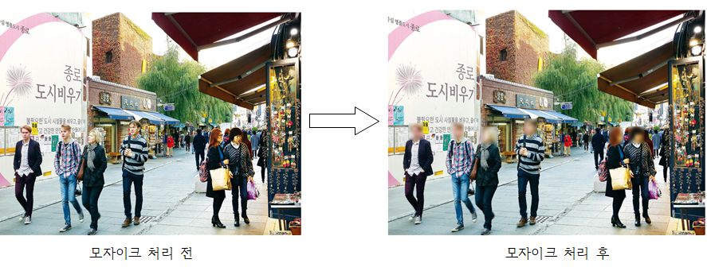

코로나로 인한 마스크 착용으로 얼굴 노출이 최소화 되었으나. 마스크 착용 헤제로 인해 얼굴 노출의 기회가 많아졌습니다.
이로 인해 저희는 인공지능을 이용하여 여러분들의 얼굴에 모자이크 처리를 해드리는 사이트를 만들었습니다.
SNS에 사진 올릴때 타인의 개인정보 보호를 위해 모자이크 처리를 할수있습니다.
아래 사진은 모자이크 처리 전 사진과 모자이크 처리 후 사진을 넣은 사진입니다.
객체 검출을 통하여 사람을 찾아내고 얼굴을 인식하여 모자이크 처리를 할수있습니다.
{% block content %} {% endblock %}